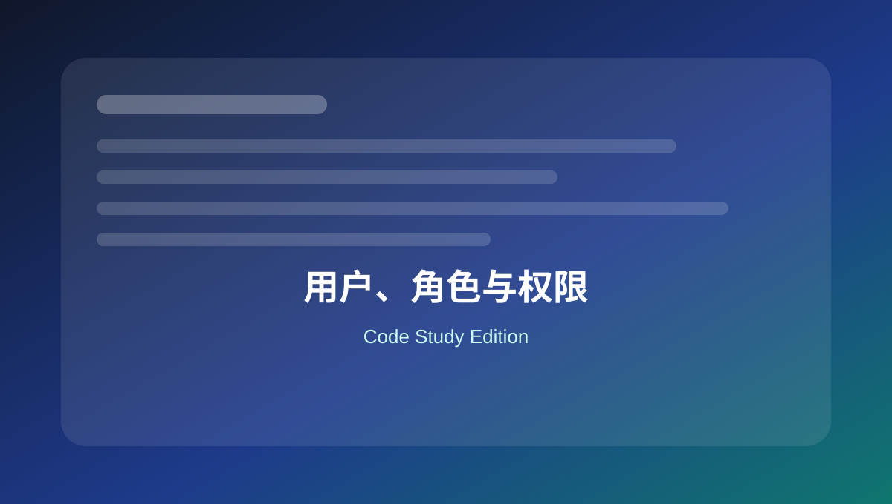

15 用户、角色与权限
整理创建角色、添加能力、限制后台菜单、用户字段和登录相关 hooks。

本页关键词
roles
capabilities
add_role
current_user_can
user meta
学习目标
- 理解角色和 capability
- 会创建自定义角色
- 会添加/移除能力
- 会给用户添加自定义字段
- 会限制后台访问
代码使用提醒
本页代码适合用于学习和研究。复制到正式网站前，请先备份，并优先在测试环境验证。
涉及用户输入、后台保存、接口请求、删除操作和邮件发送时，要同时考虑权限、nonce、sanitize、validate 和 escape。
1. 创建自定义角色
基础
<?php
function mysite_add_sales_role() {
add_role(
'sales_manager',
'Sales Manager',
array(
'read' => true,
'edit_posts' => true,
'upload_files' => true,
)
);
}
register_activation_hook( __FILE__, 'mysite_add_sales_role' );
角色创建适合放插件激活时，避免每次加载重复执行。
2. 给角色添加能力
实用
<?php
function mysite_add_cap_to_editor() {
$role = get_role( 'editor' );
if ( $role ) {
$role->add_cap( 'manage_woocommerce' );
}
}
添加能力前要确认角色存在。
3. 检查用户能力
基础
<?php
if ( current_user_can( 'edit_posts' ) ) {
echo '你可以编辑文章。';
}
if ( current_user_can( 'manage_options' ) ) {
echo '你可以管理网站设置。';
}
不要只判断角色名，优先判断 capability。
4. 限制非管理员进入后台
实用
<?php
function mysite_redirect_non_admins() {
if ( is_admin() && ! current_user_can( 'edit_posts' ) && ! wp_doing_ajax() ) {
wp_safe_redirect( home_url() );
exit;
}
}
add_action( 'admin_init', 'mysite_redirect_non_admins' );
注意不要影响 AJAX 请求。
5. 添加用户资料字段
进阶
<?php
function mysite_user_profile_field( $user ) {
?>
<h2>额外信息</h2>
<table class="form-table">
<tr>
<th><label for="department">部门</label></th>
<td><input type="text" name="department" value="<?php echo esc_attr( get_user_meta( $user->ID, 'department', true ) ); ?>"></td>
</tr>
</table>
<?php
}
add_action( 'show_user_profile', 'mysite_user_profile_field' );
add_action( 'edit_user_profile', 'mysite_user_profile_field' );
用户字段显示和保存需要分别写。
6. 保存用户资料字段
进阶
<?php
function mysite_save_user_profile_field( $user_id ) {
if ( ! current_user_can( 'edit_user', $user_id ) ) {
return false;
}
if ( isset( $_POST['department'] ) ) {
update_user_meta( $user_id, 'department', sanitize_text_field( $_POST['department'] ) );
}
}
add_action( 'personal_options_update', 'mysite_save_user_profile_field' );
add_action( 'edit_user_profile_update', 'mysite_save_user_profile_field' );
保存用户字段时必须检查 edit_user 权限。
本页总结
用户系统的代码核心是 capability。角色只是能力集合，真正安全判断应该基于 current_user_can。